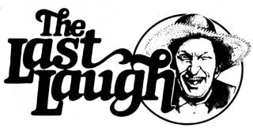

"All kings is mostly rapscallions."
Mark Twain
Well sir, summer's pretty much settled in here at Plumtree Crossin', and though it hasn't been a world beater for heat, the katydids are talkin' about it in the afternoon and the peeper frogs are discussin' it ev'ry evenin'. And I allow as how the topic of weather has jist crept into conversations down at the general store, too.
'Course with the weather bein' so all-fired temperate the fellers were a bit lackin' in inspiration. But, bein' folks who don't discourage easy-and as there wasn't anythin' else they'd rather be doin'-they made the best of a poor thing.
Why only yesterday Doe Thromberg was tellin' the gathered notables that he didn't feel it'd been much of an August, as Augusts go. He pointed out that-though it was the middle of the month already-the pond on his place weren't more than simmerin' . . . and that a three-minute egg b'iled in it still came out with the yolk on the runny side. 'Course that pond of his is mostly in the shade . . . .
As you can see, the jawbonin' was of a desult'ry nature, but before the remainder of the assembled worthies could begin to re-hash their lies from past seasons . . . who should come strollin' up but Lafe Higgins.
Now by the way Lafe was shakin' his head and mutterin' as he walked, all hands present figured that he either had somethin' on his mind or was checkin' the fit of a new pair of dentures.
Not bein' one to miss an opportunity, Clarence Smithers bit the top off a cool bottle of Nehi-jist in case Lafe was concerned about his choppers-before speakin' up.
"Mornin', Lafe," says Clarence-tonguin' his gums where the cap had nipped him-"where you been keepin' yourself?"
Well sir, when Lafe is of a mind to he can be ev'ry bit as stubborn as that mule of his (which, as you know, is so cantankerous he'd starve hisself to death if someone told him to eat). On this partic'lar occasion; howev'r, Lafe was ready enough to answer.
"My wife," he said, "she's got a bee in her bonnet about this Melvin De Mare feller . . . the one who's runnin' hisself for governor? She drug me down to the county seat yesterday so's she could hear him speak. It bein' Sunday, none of the saloons were open . . . so I had no choice but to sit through a coupla hours of his jawin'. Now, I know that a dry man makes a poor audience . . . but I do have to admit to bein' a mite suspicious of the feller . . . ."
"Ain't he the one who's claimin' that he'll reform the state legislature?" Doc chimed in. "From what I hear if he gets in we'll be decoratin' the capitol tree with crooked senators come this Christmas."
"The same," said Lafe, "an' if that's all they was to it, why I'd be hard pressed to see where he could do much harm. But this feller don't seem to think that that partic'lar job is worthy of his talents. Matter of fact, there don't seem to be any limits to what he feels he can handle. Leastwise there ain't any ceilin' on what he's promisin'."
Lafe was interrupted at this point by Clarence's blue tick-Belle-who'd seemin'ly decided that Mr. Higgins was sittin' in a tolerable cool spot. And, seein' as they'd run a coon or two together in their time, she jist naturally figured that Lafe wouldn't mind sharin'. Now of Lafe ain't a partic'larly violent man . . . so rather than actually haulin' off and outright bootin' the hound-as any of the rest of the boys woulda done-he jist sorta explained to Belle a few good reasons why they wouldn't be occupyin' the same space. That dog up and left, too . . . though whether she was moved by Lafe's logic or by the fact that he did more-or-less punctuate the discussion with his right foot is anybody's guess. Whatever the reasonbein' the gentleman he is-Lafe waited for the yelpin' to stop before resumin' his narrytive.
"As I was sayin' . . . this Mel feller's lettin' on that by this time next year (if we have the good sense and common decency to get him elected) he'll have taken care of crime in the cities, improved the lot of poor and needy folks ev'rywhere, and plastered a permanent grin on the face of all the honest citizens from here to yon and back again."
"Yessir," Skeeter Ridges spoke up, "a day don't go by when I fail to agonize over the lives of the downtrodden city folk." He accompanied this observation with a pie-eatin' smirk. "The way I hear it, work is scarce and they only got two choices: They either go on the dole or into politics . . . there bein' little difference in the labor involved in either occupation."
"I'd thought somethin' similar myself," allowed Lafe, "but to hear De Mare tell it, it ain't that easy. I gathered from his speech that they got cockaroaches there so big that them bugs jist eat you where you stand without botherin' to drag you off first . . . and that the city is crawlin' with muggers, burglars, and the like to the extent that the police can't do nothin' but stick up ev'ry pedestrian who's on the streets after dark."
"Now I recall the feller." Clarence was gettin' his two cents in. "As I recollect, he was stumpin' over in Lick Skillet a coupla years back . . . barkin' up that self-same tree if my mem'ry serves me. Seems he had some committee then that was s'posed to clean things up. His aim-as I understood it at the time-was to get hold of ev'ry govermint worker who'd ever taken a dollar bribe and run the rascal out on a rail. Those who'd taken more than that-I figured-were goin' to get put on the committee . . . bein' as they were the experts."
Well sir, the boys had a laugh over that one, with old Ott gone near to chokin' on his Red Man. But it was a matter of some seriousness, and after the wheezin' died down Lafe got back to the matter at hand.
"Near as I can tell," he said (rockin' back to get his eyes in the shade a bit), "ol' De Mare has this theory. He figures politicians are most all crooked . . . 'ceptin' maybe hisself. To hear him talk, the politickin' game includes most ev'rythin' from vagrancy to manslaughter . . . with a case of bad table manners thrown in for good measure. Now, up to there I agree with the man.
"What he aims to do about it though, is to bring in a whole raft more of the same sorta criminals . . . to clean up those we already got. To my way of thinkin' that's akin to tryin' to stop a flood with a fire hose."
"That's the way them birds work," offered Ott. "Ev'ry time we folks get to the point where we're half p'isoned from swallerin' too much govermint some politician comes along an' allows that if we jist choke down a few more tablespoons we'll be plum' fine. Reminds me of that feller who used to take his summer vacations somewhere 'twix Texas and East Hell 'cause he claimed it'd make him feel that much cooler when he got back home."
Well; ev'rybody present pondered that one for a good thirty seconds. And it seemed to be the unspoken consensus that the subject of politics had pretty much run dry for the moment . . . especially since it's a topic of limited importance anyway when compared to real meanin'ful stuff like crops, weather, and Olive and August Carmichael's latest family feud. So, after pickin' off a few dozen red ants with his 'baccy juice (this amountin' to a respectful waitin' period) Ott cheeked his plug and uncobbed the jug of Purvis Jacobs' summer thunder that reposed under the bench. He took a soulful pull of the corn squeezin's (his Adam's apple lookin' like a bear cub tryin' to climb a slippery elm) and passed it on.
"I swear I don't know what's got into the weather this summer," Ott said, castin' a pityin' eye at the sun overhead. "Why, I remember that August back in '54 . . . .
Ev'rybody sat up a little at that . . . gettin' ready to jump in at the first openin'.
And I must say things got a mite more interestin' from that point on.
"Wars begin in August. In the temperate zone and twentieth century we have this tradition. Not only seasonal Augusts . . . nor only public wars. "
Thomas Pynchon
"And he gave it for his opinion, that whoever could make two ears of corn or two blades of grass to grow upon a spot where only one grew before, would deserve better of mankind, and do more essential service to his country than the whole race of politicians put together. "
Jonathan Swift
|
 |
|
|